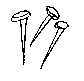
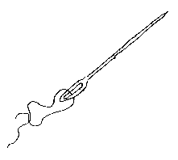

|
 |
Oeune Epîle èt oeune Adgiule 'taient vêsénes Dans lé pannyi à travas dé mes couôsénes, Et coume i-l-'taient à rain n'fêre, i k'menchîdr'nt brav'ment A s'entre ergouannyi, coum' les fainniants font souvent.
Chain qu'ou valèz – ou n'êt's rain d'bon? Faut qu'ou séyie oeune Fliête, S'ou criyis 'pâsé, sans tête, Par le monde.
Coume est qu'ou pouôrêt's vos r'trouvé, Sans un seul yi, s'ou tchiyêtes Dans un tas d'fain? Tch'est qu'ou f'raîtes?
Man k'min d'man mux – v'là chain q'jé f'rais. Eh-pis, èh-tou – ch'est chôs' cliaîre, D'z-yèrs qué nou bouch' n'peuv'nt qué niêre. Ou n'avez qu'à vos ordghilyi Dé vot'e yi si souvent remplyi!
Sorte d'pètre, raintchivâle; Vot'e mêtchi ch'est d'pitchi tous Et d'dêningré bain miyeu qu'vous.
Ergardèz coume ou s'érdréche... Dé ch't-ordghi, ou-l-en a si gros, Qué s'ou s'crotchait, ou s'romp'rai l'dos! Lé vrèt d'Chausy, j'considêre, N'craqu' pas d'oeunne 'tèl' manniêre.
Qu'apel la pêle "nièrmiton!" Ah! ch'est cliai qué j'sis boutèe Par oeune vaque êcônèe!
Tandi qu'nos deux adgièchies s'ent'e picangnaient,
Eh-bain, vêsén', yoù sont nos mots,
J'pense, à rain nos entre erprochi. Nos en v'là du coup seux béles! N'entenmons pus dé quéréles. Not'e malheu – jé crai qu'j'l'èrsens – Nos 'rmètra enfin à nos sens.
Qu'j'n'y séyons v'nus d'vant ch't-ôrage. Coum' j'ersemblions és êtr's humains, Qui sé disputent pour des rains, Et qui n'dêcouvrent jeanmais mie Qui sont Frêres, qu'oprés chut' vie – Quand i sont dans la tère enfouis. Coum' dans l'ponsi jé soum's couchis!...
|
 |
Le lecteur est prévenu que l'auteur de cette pièche n'emploie l'è dans l'idiome jersiais que lorsque l'e doit être prononcé plat, tel que l'a dans le substantif anglais hat, quel son on doit donner à l'è dans les mots èt (et), nièche (nièce), fèt (fait), nè (neige), frèt (froid), pièche (place), drèt (droit), etc.
Almanac de la Chronique de Jersey 1871
Viyiz étout: